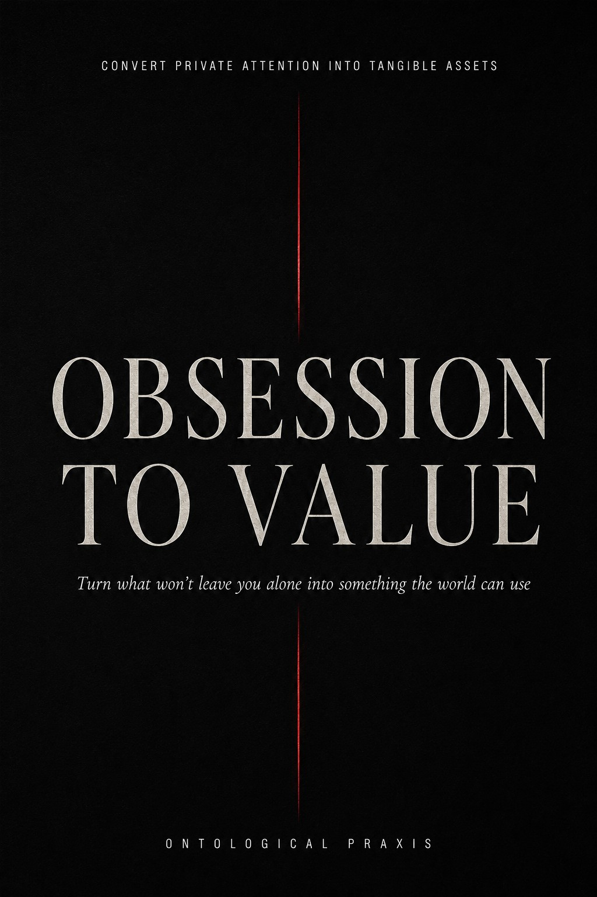
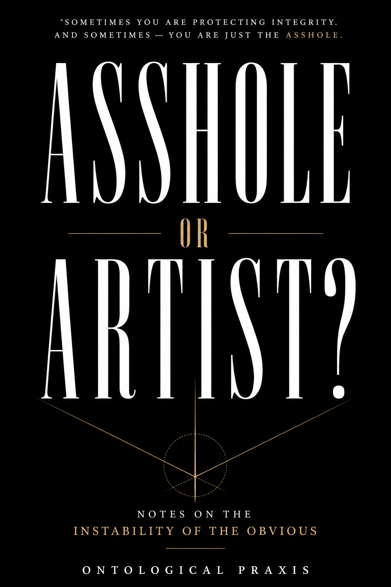

Fragments are not random.
The scraps you keep returning to often contain the early architecture of a project before the project knows what it is.
Fragments → Signal → Artifact
Ontological Praxis helps extract hidden patterns, possible artifacts, and usable value from the notes, images, scraps, obsessions, and unfinished material you already have.
Most people do not lack material. They lack a way to read the material they have already accumulated. The work begins with fragments: notes, screenshots, photographs, half-ideas, abandoned drafts, field observations, recurring questions, and charged images that will not leave you alone.
New beta result
A recent beta tester sent fragments for a Signal Extraction pass. This was their response.
Short video explanation of the Signal Extraction premise.
“I was pleasantly surprised by this absolutely on point analysis. It is so interesting that someone who is not privy to your inner thoughts could take something you’ve created and show you the backstory, YOUR backstory. I got real insight into myself through this process. I feel seen and understood on a deep level. Thank you.”
Early Signal Extraction beta feedback
Signal Extraction Beta
This beta is for artists, writers, researchers, builders, independent thinkers, and archive-haunted people who have fragments that feel charged but not yet organized into a finished thing.
Send 5–15 fragments: notes, photographs, screenshots, half-ideas, research scraps, recurring obsessions, abandoned drafts, field observations, objects, phrases, or images. Include a sentence or two about why you chose them, or why they still have charge for you. Context matters.
Messy is fine. Polished is unnecessary. The fragments just need to still matter somehow.
You receive a structured readout of patterns, hidden signals, possible artifacts, and value directions.
Since this is a beta, honest feedback is requested. A testimonial is welcome if the pass feels genuinely useful.
The premise
Not necessarily money in the crude sense. Value can be a book, a method, a research direction, a course, an artwork, a language system, a product, a diagnostic lens, or a form of self-understanding that was buried in the archive before it had a name.
The scraps you keep returning to often contain the early architecture of a project before the project knows what it is.
Repetition is not automatically pathology or distraction. Sometimes it is a signal asking to be converted into form.
A pile of material becomes useful when its patterns, pressures, and possible artifacts are made visible.
Books
Short books and field manuals for perception, signal extraction, artistic practice, and the conversion of obsession into usable form.

Turn what will not leave you alone into something the world can use. A compact field guide for converting charged fragments, obsessions, and unfinished material into artifacts, offers, projects, and forms of value.

Notes on the instability of the obvious. A compact Ontological Praxis book on perception, friction, pattern recognition, outsider intelligence, and the charge hidden inside what other people dismiss.
Archive Demonstration
A Signal Extraction pass looks for recurrence, pressure, hidden structure, possible form, and the smallest usable next artifact.
A pattern of seeing ordinary surfaces as double-functioning fields: aesthetic, biological, conceptual, and operational at once.
A recurring pull toward plants, insects, pavement, water marks, field notes, and small-scale ecological signals as sources of method and meaning.
The archive does not merely document perception. It contains seeds for essays, field manuals, artworks, books, methods, and diagnostic tools.
Contact
For Signal Extraction beta inquiries, send 5–15 fragments and a few words of context for each. Why this fragment? Why does it still matter? Why did it remain in the archive?
Include “Signal Extraction Beta” in the subject line if you are requesting a beta pass.